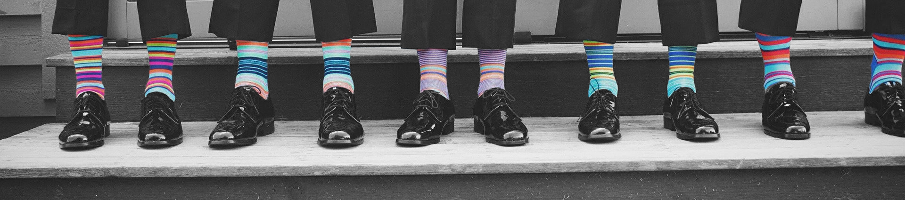
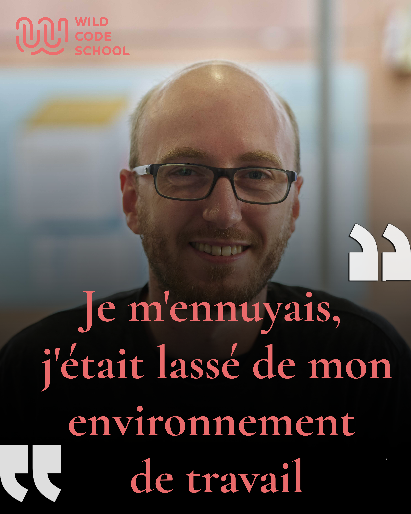

La Wild Code School, viens étudier en chaussettes !
Depuis le 11 septembre 2020, la Wild Code School de Reims accueille 23 nouveaux « wilders » dans sa
promotion « HORIZON ».
Une promotion synonyme de retour à la formation en présentielle à contrario de la précédente qui s’est
déroulée en distancielle
à la suite de la crise sanitaire.
C’est donc pour une mission de 5 mois, que se sont lancés ces étudiants, avec pour mots d’ordre:
travail, convivialité et entraide.

Quartier Libre
Le Quartier Libre est un espace de coworking créer par
"Le bloc",
un prestataire de services, rassemblant 40 entreprises pour un total
de 102 résidents repartis sur deux bâtiments :
Les Quartiers Généraux, situé au 6 rue Saint-Brice (fondé en juin 2018 dans
les anciens locaux de pôle emploi),
et administré par Virginie FAUCHEUX, dédié à l'entreprenariat et qui ne compte pas moins de 36
entreprises.
Et La Petite Halle, dirigé par Fiona NEBINGER
et situé au 53 rue Vernouillet, qui est l'espace événementiel de
Quartier Libre et qui compte en temps normal environ une centaine de
places assises et 399 places debout.
Néanmoins, depuis la crise sanitaire, le nombre de places a fortement diminué, il compte désormais 150
places assises.
La Wild Code School
La Wild code School à vu le jour le 26 Août 2013 à la Loupe par les fondateurs
Anna Stépanoff et Romain Coeur.
C'est une école de codage innovante qui forme aux métiers technologiques.La Wild
possède aussi un réseaux de campus dans environ 26 villes Europpéennes (Reims, Biarritz, Bordeaux,
Lille, La loupe, Lyon, Orléans, Paris, Strasbourg, Toulouse, Nantes, Marseille, Tours, Bruxelles,
Berlin, Bucarest, Lisbonne, Londre et Madrid).
Et de nouveaux campus récemment ouverts à Amsterdam, Barcelone, Budapest, Dublin, Milan, Prague et
Varsovie.
La Wild s'est beaucoup développée autour des differents métiers de développeur Web (PHP, Javascript et
Java/Android) et propose aussi des formations autour de 6 grands domaines: développement informatique,
la data, la cybersécurité, le product management, l'UX/UI design et le buisness développment 2.0.
L'école repose sur une pédagogie "hybride"(ou blinded learning) alliant le e-learning et les travaux de
groupe via la plateforme Odyssey. La formation est présentielle et est basée sur la réalisation de
projet de groupe, une pratique et une approche pédagogique de classe inversée.Cependant ces nouvelles
promotions ont vu apparaitre la toute première promotion 100% distancielle vu la conjoncture
economique/sanitaire actuelle.
Aujourd'hui la Wild Code School forme essentiellement des adultes en reconversion professionnelle sur
des formats d'environ 3 à 5 mois avec pour but de trouver un stage de 4 mois afin de réaliser une
immersion au sein d'une entreprise.
Intégration
Le 11 septembre 2020, la promotion Horizon a vu le jour à Reims chez la Wild Code School, une journée
synonyme de partage et de découverte.
Nos wilders se sont retrouvés autour d’un petit déjeuner avant de faire la connaissance d’un camarade
tiré au sort et le présenter devant tout le monde.
Une fois les présentations faites, nos wilders se sont divisés en 2 afin de visiter les locaux de
Quartier Libre avant de se retrouver tous ensemble autour d’un repas.
Dans l’après-midi, par groupe de 4, nos wilders ont eu pour mission de représenter des mots avec des
lettres qu’ils trouvent dans le paysage rémois.
Après cela, une configuration des ordinateurs personnels et la distribution des pc de la Wild Code
School, pour ceux qui le souhaitent
17h, déjà l’heure de se quitter, nos wilders sont impatients que le week-end passe afin de commencer les
hostilités lundi matin.
Interview entreprise Quartier libre
Présentation de l'entreprise Attineos.
Pouvez-vous vous présenter en quelques mots?
Nous sommes une ESN (entreprise de services du numérique) de vocation généraliste depuis Mai 2020 sur
Reims.
Quelle est la taille de votre structure?
Nous possédons une structure capable d'acceuillir environs 200 personnes.Notre siège Social se trouve à
Paris (75001)
Quels sont vos projets à moyen et long terme?
Nous espérons obtenir plus de 50 collaborateurs sur au moins 3 ans, et nous espérons continuer sur cette
voie pour les années à venir.
Depuis combien de temps êtes-vous à Quartier Libre?
Nous somme arrivés au Quartier Libre dans la période de Mai 2020, et nous sommes très content de notre
choix, le fait que la Wild COde School soit présente dans les locaux à facilité notre choix pour nous
installer.
En quelques mots, pouvez-vous nous parler de votre relation avec la Wild Code School?
Excellente.Deux de nos derniers recrutements sont issus de la Wild Code School, de plus lors de notre
arrivée à Quartier Libre, Clément (ndlr: Campus Manager Wild COde School) nous à prêté bureaux et chaises
pour nous installer.
Avez-vous pour projet de prendre 1 ou plusieurs stagiaires?
Nos locaux actuels et nos projets en cours ne nous permettent pas encore d'accueillir de stagiaires, mais
nous croyons au potentiel et vivier que cela apporte, nous espérons dans l'avenir pouvoir en accueillir.
Présentation de Damien, Wilder de la promotion HORIZON.

Quel est ton parcours professionnel?
J'ai passé un Bac ES, ensuite je suis allé en fac de géographie, mais j'ai arrêté en
cours de route car ça ne me plaisait plus. Après mon départ de la fac, j'ai suivi
une formation de maintenance en informatique pendant environ 1 an.
Que fesais-tu avant la Wild?
J'étais vendeur dans un hypermarché pendant 16 ans.
Pourquoi a tu arrêté?
Je m'ennuyais, j'était lassé de l'environnement de travail.
Quels sont tes centres d'intérêt?
J'aime jouer aux jeux vidéo, j'aime le cinéma, le bricolage et le jardinage.
Pourquoi avoir choisi la Wild
La première fois que j'ai découvert la Wild Code School, c'était sur internet
et à la télévision et à ce moment-là j'était à la recherche d'une nouvelle expérience
professionnelle dans le domaine du développement web. J'avais beaucoup apprécié la
formation en informatique que j'avais faite pendant mes études et je voulais développer
mes connaissances.
Te sens-tu bien parmi les Wilders?
Oui j'aime beaucoup l'ambiance qui règne à la Wild, et je me sens enfin compris et dans mon
élément avec les autres Wilders.
Que comptes-tu faire après la Wild?
Je compte essayer de trouver un job dans le domaine du développent web ou l'informatique.
Présentation de Fabrice Roger, en réinsertion professionnelle à la Wild Code School,
actuellement en stage.
Tu es actuellement en stage suite à ta formation à la Wild Code School de Reims,
que faisais-tu avant cette formation?
Je suis en reconversion suite à 24 ans passé dans l'imprimerie en tant que deviseur, suivi clientèle, direction
et pour finir responsable d'agence.
Quelles sont les motivations qui t'on poussé à choisir cette formation et pas une autre?
J'ai effectivement choisi la Wild Code School par rapport à la MANU suite aux entretiens dans les deux écoles
(merci Clément et Romain). Et également car un de mes collègues avait fait la première session de février ou mars 2018.
Le schéma d'apprentissage (programme) m'a complètement convaincu.
Beaucoup de Wilders sont anxieux au sujet de la recherche de stage, quels conseils peux-tu leur donner?
Tout d'abord c'est normal d'être anxieux, ensuite je dirais de commencer dès maintenant, de suivre les conseils de Clément
et de se mettre une routine d'envoi de CV et lettre de motivation une à deux fois par semaine. Et surtout de faire des
relances si on n'a pas de retour. Le réseau est très important également.
Où fais-tu ton stage? Peut tu nous raconter une journée type?
Je fais mon stage chez Alain Renault Communication sur Reims. Il n'y a pas de développeurs mais un responsable digital
qui maîtrise le développement ainsi que la partie SCRUM. Une journée type pour ma part c'est plutôt des sprints d'une semaine
avec une mission à livrer le vendredi pour un projet global et qui s'accompagne de missions ponctuelles de demi-journée suivant
les demandes des collaborateurs (ou des clients).